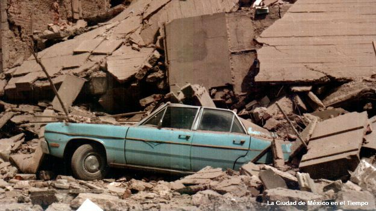
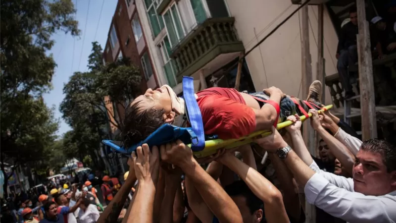
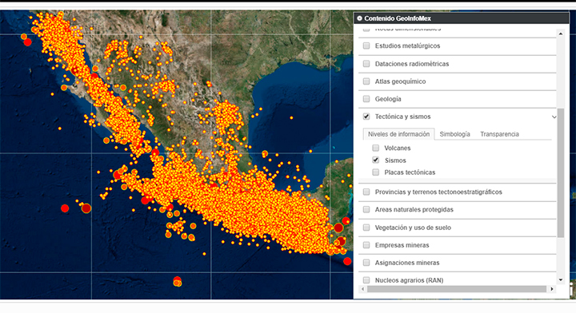

[BBC] Terremoto de 1985: el devastador sismo que cambió para siempre el rostro de Ciudad de México

La tierra volvió a temblar en México cuando se cumplen exactamente 32 años del mayor desastre en la historia de ciudad de México. A las 7:19 horas del 19 de septiembre de 1985 la capital del país se sacudió con un sismo de magnitud 8,1. El movimiento devastó a la zona centro de la ciudad, provocó daños severos en cientos de edificios y causó la muerte de miles de personas. No se conoce el número exacto de víctimas que dejó ese sismo: el gobierno dijo que fueron 3.692. La Cruz Roja Mexicana señala que la cifra superó los 10.000.
[BBC] Sismo 2017 en México: las lecciones no aprendidas que dejó el terremoto del 19 de septiembre

Gobiernos y ciudadanos tienen mucho que aprender de los desastres naturales. Pero el sismo que azotó México el 19 de septiembre de 2017 -provocando la muerte de 369 personas en el centro del país- evidenció lecciones no aprendidas, o que se olvidaron en poco tiempo. Desde que ocurrió el terremoto, son frecuentes las denuncias sobre edificios mal construidos, y que se desplomaron o sufrieron daños irreparables. Hay investigaciones de desvío de recursos destinados a atender a damnificados hacia las campañas políticas.
[Servicio Geológico Mexicano] SISMOS: Causas, características e impactos

Sismos, temblores y terremotos son términos usuales para referirse a los movimientos de la corteza terrestre, sin embargo, técnicamente hablando, el nombre de sismo es más utilizado (terremoto se refiere a sismos de grandes dimensiones).
Sin embargo, es importante estar preparados para un evento de esta naturaleza ya que vivimos en un país en el por su posición geográfica tiembla constantemente.